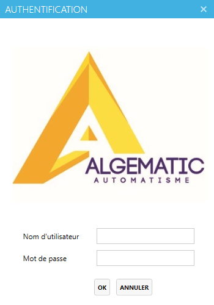

CAmatic Piscine
Desktop operations system
A Windows desktop system for swimming pool and facility operations: subscribers, associations, access cards, memberships, payments, time slots, devices and reports.
1. Contexte du projet
The application is an operational tool used by staff who need fast data entry and reliable daily management. It was built in a professional team context around a legacy desktop stack and client-specific workflows.
2. Objectifs
- Subscriber management
- Membership lifecycle
- Card/access control
- Payments and reporting
- Configuration of clubs, devices and time slots
3. Acteurs
- Administrator
- Reception/operations staff
- Accounting user
- Access/device manager
4. Interfaces et fonctions principales
| Authentication | Login screen for username and password before staff can access the management modules. |
| Home/Dashboard | Entry point for daily operations and navigation toward visitors, cards, devices, subscriptions and reports. |
| Visitors/Subscribers | Create, update, search and inspect visitor/subscriber records. |
| Cards | Assign cards, mark lost cards, return cards and manage access credentials. |
| Subscriptions | Renew, pause and recover individual or club subscriptions. |
| Configuration | Manage clubs, associations, time zones, devices and system parameters. |
| Reporting/Statistics | Generate operational reports and statistics for follow-up. |
5. Technologies utilisees
C#.NET Framework 4.8WPFSQL ServerMVVMCrystal Reports
6. Travail en equipe / collaboration
Collaboration project: my work is presented as part of a larger professional codebase, with attention to existing modules, client workflow constraints and maintainability.
7. Capture d'ecran reelle

8. Liens
Repository: https://github.com/tayebzitouni/Algematic_pisicne_Myversion
Demo: Desktop application, not deployable to Vercel.